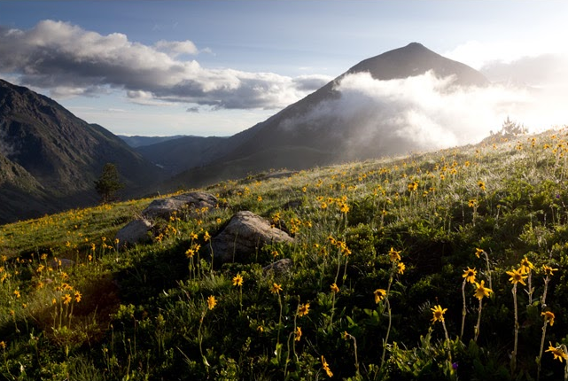

Cueillir est un acte plurimillénaire qui perdure sous différentes formes dans presque toutes les sociétés. Aujourd'hui, en France, on observe un phénomène de professionnalisation des cueillettes parallèlement à une hausse de la demande en plantes sauvages. Elles s'insèrent dans des circuits commerciaux divers, des plus locaux au plus internationaux.
Les plantes sauvages qu’ils récoltent sont commercialisées dans le cadre de filières artisanales associées à des marchés de proximité, mais aussi dans les secteurs industriels dont elles constituent la matière première. Dans les années 1990-2000, les discours autour de la valeur économique de la biodiversité et les promesses d’innovation en matière d’ingrédients naturels modifient le regard porté sur la flore sauvage et les cueillettes commerciales. La forte croissance de la demande se traduit par une diversification et une intensification des prélèvements et pose la question de la vulnérabilité de la flore.
Aussi s'inscrit-elle dans un ensemble complexe d'interactions et d'interrelations avec les humains comme avec les autres qu'humains. Les façons de cueillir influent sur la flore. Elles peuvent s'avérer destructrices et intensifier la dégradation de la biodiversité. Inversement, elles peuvent valoriser certains milieux comme les friches ou les prairies d’altitude et contribuer à la diversité des paysages.
.webp)
La cueillette commerciale représente aujourd'hui une activité socio-économique à part
entière qui a une incidence sur les milieux naturels et la flore sauvage. Selon
l’ONG Traffic, 60 à 90 % des ingrédients végétaux utilisés à l’international
seraient sauvages (Traffic, 2022).
Le monde industriel les nomme « matière
première
végétale », « composant naturel ». Il s’agit d’une masse végétale au service d’une
économie mondiale. Or, dans un contexte d’érosion de la biodiversité et de
changement climatique, cette forte demande peut entraîner une surexploitation des
ressources végétales sauvages. Des cueillettes intensives et mal menées aggravent
alors une situation écologique dégradée par
l’artificialisation des sols et les pollutions. En revanche, le respect de bonnes
pratiques de cueillettes contribue au maintien des populations de plantes et des
milieux.
.webp)